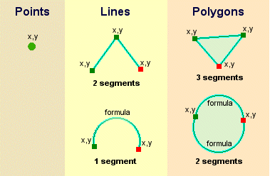
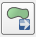
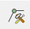
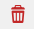

Chapter 5: Working with Vector Data¶
Learning Objectives
Understand vector data
Identify attribute of vector data
Create vector data
Add vector layers
Symbolize vector layers
Add labels to vector layers
In this chapter, we will learn what is meant by vector data. We will practice adding it to our QGIS projects, and we will learn how to style the data in different ways.
5.1 Vector Data¶
Vector data is the most common type of data found in GIS. A vector is essentially something in the form of a dots, or lines connecting those dots. In other words, points, lines, and polygons are all vectors. (curved lines are vectors too, but we won’t worry about that for now) We are already quite familiar with vector data because in the previous unit, we used JOSM to create it!
Each object in a vector dataset is referred to as a feature. When we are using JOSM we often refer to them as objects, but in traditional GIS terminology they are features. A polygon that represents a building is a feature, as is a line that represents a river. Each feature has a geographic location, and is attached to other data that describe the feature.
One important thing to note is that QGIS layers can only contain one type of feature. That is, one layer can’t contain both point features and line features, because they are different types of data. Hence if you have a file that contains school polygons and another file that contains school points, you would add them as two separate layers.
Almost always, polygon layers will be at the bottom of your layer list, line layers in the middle, and point layers at the top. You don’t generally want your polygons overlapping your lines and points.
5.2 Attribute Data¶
It’s important to know that the data you will be working with does not only represent where objects are in space, but also tells you what those objects are.
Open the project
Chapter_5_Working with vector.qgs. This is the same project that you worked with previously.Close the InaSAFE panel if you still have it open.
You can see in your project the position of Sleman districts, the railway, and some roads, but you can’t see all of the data contained in those layers.
Select Jalan_Sleman_OSM in the layers list.
Click the Open Attribute Table button:
You will see a table with more data about the streets layer. This extra data is called attribute data. The lines that you can see on your map represent where the streets go - this is the spatial data. You will remember in JOSM that there was the same division. The points, lines, and shapes you drew tell us where , but the tags, or attributes, tell us what. These definitions are commonly used in GIS, so it’s essential to remember them!
Take a look at the attribute table. Each row in the table is associated with one feature in the streets layer. Each column contains one of the attributes. If you select other layers and click on the Open Attribute Table button, you’ll see different tables.
Close the attribute table.
5.3 Creating Vector Data¶
Before you can add new vector data, you need a vector dataset (a layer to add it to). In our case, we’ll begin by creating a new data layer, and then we will discuss how to edit existing vector layer in QGIS, and how to create an entirely new dataset.
Create a new project in QGIS by clicking on the New Project icon.
Go to . You’ll be presented with the following dialog:
At this point we must decide what kind of dataset we want to create. Remember that a data layer can only contain feature of points, lines, or polygons – never a mix. When we create the layer, we must define what type of data it will contain.
Since polygon are made up of points and lines. Let’s jump into polygons. Once you’ve mastered this, creating a point or a line should be easy!
Check the box next to Polygon.
We’ll specify the Coordinate Reference System (CRS) in the next box. By default the box will contain the CRS of the project, which for us will be WGS84. This is a widely used and very useful CRS, so let’s stick with it!
When we create our new layer, the attribute table will only have one column by default - id. This attribute contains a unique id number for every feature. We can add additional fields to the attribute table now, when we create the layer. Let’s add a name field.
Type keterangan into the boxt next to Name. The setting should match those shown here:
Click the Add to attributes list button. Your attributes list should now look like this.
Click OK. A save dialog will appear.
Navigate to a directory of your choosing.
Save the new layer as
krb_merapi.shp.The new layer should appear in your Layer panel.
Note
Shapefile is a commonly used geographic file format. It can easily be converted into other formats, and most GIS software can read this type of file.
5.3.1 Digitising Vector Data¶
Digitising, as you might have guessed, is the art (or science) of creating digital vector data from another source, such as a raster image. In order to begin digitising, we must firt enter edit mode. GIS software commonly requires a separate mode for editing, to prevent user from accidentally editing or deleting important data. Edit mode is switched on or off individually for each layer.
Open raster layer
peta_krb_merapi_2002_modified.tifin left QGIS toolbar:
Open vector layer
krb_merapi.shp:
Select
krb_merapi.shpin the Layers panel.Click on the Toggle Editing button:
If you can’t find this button, ensure that the Digitising toolbar is enabled. There should be a check mark next to the menu entry.
One you are in edit mode, the digitising tools will become active:
From left to right on the image above, they are:
Toggle Editing: activates / deactivates edit mode.
Save Layer Edits: saves changes made to the layer.
Add Feature: start digitising a new feature.
Move Feature(s): move an entire feature around.
Node Tool: move only one part of a feature.
Delete Selected: delete the selected feature (only active if a feature is selected).
Cut Features: cut the selected feature (only active if a feature is selected).
Copy Features: copy the selected feature (only active if a feature is selected).
Paste Features: paste a cut or copied feature back into the map (only active if a feature has been cut or copied).
Before you start digitising, go to
Change Snapping mode to Advanced, and check krb_merapi layer with Mode to vertex and segment and Tolerance value is 1 and then set Units to pixels:
Note
It’s important to check Avoid intersection if you want to create a polygon with each feature snap each other.
Click OK.
Let’s add new feature. Click on the Add Feature button to start digitising:
Note
You’ll notice that your mouse cursor become a crosshair. This allow you to more accurately place the points you’ll be digitising. Remember that even as you’re using the digitising tool, you can zoom in and out on your map by rolling the mouse wheel, and you can pan around by holding down the mouse wheel and dragging around in the map.*
Start by clicking on a point somewhere along the edge of the dark pink area.
Place more points by clicking further along the edge, until the shape you’re drawing completely covers the field. This is very similar to drawing a polygon in JOSM.
To place the last point, right-click where you want it to be. This will finalise the feature and bring up the Attribute form filling dialog.
Fill in the values as shown here:
Click OK.
If you make a mistake while digitising a feature, you can always edit it later. Simply finish digitising the feature and then follow these steps:
Select the feature with the Select Feature tool:
Then use one of these tools to edit the feature:
|  | Move feature(s) tools |
Move entire feature(s) |
|  | Node tools |
Move only one point where you may have misclicked |
|  | Delete selected |
Get rid of the feature entirely so you can try again |
Undo |
Undo mistakes or press Ctrl + Z on keyboard |
Now try it on your own:
Digitise all the hazard prone area from inner circle and then to outer circle. Use the image to assist you and if you confused about what information for each colours, you might need to look at the legend on the right side.
Remember that each new feature need to have a unique id value!
When you are finished adding feature to a layer, you must savee the changes to that layer.
Click on the Toggle Editing button.
You will be asked to save your edits. Click Save.
Now you know how to create polygon feature! Creating points and line layer is just as easy – you simply need to define the type of layer when you create it, and of course you can only create point in point layers and lines in line layers.
5.4 Adding Vector Data¶
As we mentioned previously, a shapefile is a commonly used geographic file format. It can easily be converted into other formats, and most GIS software can read this type of file. You may notice when adding a shapefile that there are numerous files in your shapefile directory with the same name. This is because a shapefile actually relies on a collection of several other files to store the data and keep various settings. When you add a shapefile to your project, you should always add the one that ends in .shp, but the rest of the files are important too!
Do you remember how to add a shapefile? Try adding the layer
POI_Sleman_OSM, from the shapefile located in the tutorial directory. If you don’t remember how to add a new vector layer, refer to the instructions in chapter 2.Your project should look like this after the new layer has been added:
Databases
Shapefiles (and other types of files) are one way to store geographic data. You can also load a vector layer into QGIS from a database. You may already be familiar with Database Management Systems (DBMS) such as Microsoft Access. GIS applications also make use of databases to store geographic data. Databases can be hosted and used locally on your computer, or could be shared between users over a network or even the internet.
Let’s try adding a layer from a database. Click on the following icon. If you can’t find it, right-click on the toolbar and make sure that the “Manage Layers” toolbar is enabled.
You will see a dialog box. Click New.
Navigate to the
QGSI for Disaster Management/Slemanfolder and find the fileguna_lahan.db. Select the file and click Open.Now in the original dialog box, you will see that the dropdown button now contains guna_lahan.db @…, followed by the path of the database file on your computer.
Click Connect. You will see the following in the box:
This database actually has three different layers available, all saved in the database. Click on the first layer to select it, then hold SHIFT and click the last layer to select them all.
Click Add. This will add all three layers to our project.
Note
Remember frequently to save your map! Your QGIS project file does not save the data (data is saved in a shapefile or a database), but it does remember the layers that you have added to the project, their order, and any settings that you adjust.
The layers you have just added are all polygon layers, so you will want to drag them down below the line and point layers. If you have a checkbox beneath your layers list that reads Control rendering order, go ahead and check it.
Let’s remove a couple of layers to make it easier to deal with our data. Right-click on the railway and district layers and click Remove. Then order your layers like this:
5.5 Symbology¶
The symbology of a layer is its visual appearance on the map. One of the basic strengths of GIS is that you have a dynamic visual representation of the data you’re working with. Therefore, the visual appearance of the map (which depends on the symbology of the individual layers) is very important. The end user of the maps you produce will need to be able to easily see what the map represents. Equally as important, you need to be able to explore the data as you’re working with it, and good symbology helps a lot.
In other words, having proper symbology is not a luxury or just nice to have. In fact, it’s essential for you to use a GIS properly and produce maps and information that people will understand and be able to use.
5.5.1 Changing colors¶
To change a layer’s symbology, we will open its Layer Properties. Let’s begin by changing the color of the pemukiman layer.
Right-click on the pemukiman layer in the Layers list.
Select the menu item Properties in the menu that appears.
Note
By default you can also access the Properties menu by double-clicking on the name of the layer.
In the Properties window select the Style tab.
Click the color button to change the color
A standard color dialog will appear. Choose a grey color and click OK.
Click OK again in the Layer Properties window, and you will see the color change being applied to the layer.
5.5.2 Changing Symbol Structure¶
This is good stuff so far, but there’s more to a layer’s symbology than just its color. Next we want to change the color of the vegetation, but we also want to eliminate the lines between the different types of vegetation so as to make the map less visually cluttered.
Open the Layer Properties window for the vegetasi layer. Under the Style tab, you will see the same kind of dialog as before. This time, however, we will do more than just change the color.
Click on the Simple Fill under the symbol layer column panel. Then Symbol layer dialog will appear next to the symbol layer column panel.
Change the color inside the polygons in the layer by clicking the button next to the Fill label:
In the dialog that appears, choose a new color (that seems to suit vegetation).
Click OK.
Next, we want to get rid of the lines between all the farms.
Click on the Border style dropdown. At the moment, it should be showing a short line and the words Solid Line.
Change this to No Pen.
Click OK, and then OK again. Now when we look at our map, the vegetasi layer will have a new color and no lines between polygons.
Try changing the symbology of the pemukiman layer so that it also does not have outlines.
5.5.3 Scale-based Visibility¶
Sometimes you will find that one of your layers is not suitable for a given scale. For example, if you have a layer which shows the earth’s continents but not with very much detail, the continent lines may not be very accurate when you are zoomed in very far to see streets.
Note
Scale is a reference to how your map references what is actually on the ground in terms of size. Scale is usually given in terms like 1:10000, which means that one centimeter of length on your map is equal to 10000 centimeters in the real world. When you zoom in or out on a map, the scale changes, as you can see in the status bar at the bottom of QGIS.
In our case, we may decide to hide our streets layer when we are zoomed out very far (a small scale). For example, the streets layer is not very useful when we are zoomed out far and it looks like a blob.
Let’s enable scale-based rendering:
Open the Layer Properties dialog for the Jalan_Sleman_OSM layer.
Activate the General tab.
Enable scale-based rendering by clicking on the checkbox labeled Scale dependent visibility. Then change the value in “Maximum” to 1:10 and “Minimum” to 1:100000
Click OK.
Now look at your map and see what happens when you zoom in and out. The streets layer should appear when you are at a large scale and disappear at small scales.
Note
You can use your mouse wheel to zoom in increments. Alternatively, use the zoom tools to draw a box and zoom to it:
5.5.4 Adding Symbol Layers¶
Now that you know how to change simple symbology for layers, the next step is to create more complex symbology. QGIS allows you to do this using symbol layers.
Go back to the vegetasi layer’s Symbol properties dialog as before.
In this example, the current symbol has no outline (i.e., it uses the No Pen border style).
Click on Fill then click + button on the left.
Click on it and another symbol layer will be added to the list:
Note that it may appear different in color, but we’re going to change that anyway.
Now this layer has two different symbologies. In other words, both the green color AND the blue color will be drawn. However, the blue color will be drawn above the green, and since it is a solid color, it will completely hide the green color. Let’s change it.
It’s important not to get confused between a map layer and a symbol layer. A map layer is a vector (or raster) that has been loaded into the map. A symbol layer is part of the symbol used to represent a map layer. This course will usually refer to a map layer as just a layer, but a symbol layer will always be called a symbol layer, to prevent confusion.
Set the border style to No Pen, as before.
Change the fill style to something other than Solid or No brush. For example:
Click OK and then OK and take a look at your layers new symbology.
Now try it yourself. Add an additional symbology layer to the Jalan_Sleman_OSM layer.
Give the thickness of the original layer a value of 2.0
Give the thickness of the new symbology layer a value of 1.0
This will result in your roads looking something like this:
Our streets now appear to have an outline, but they seem disjointed, as if they don’t connect with each other. To prevent this from happening, you can enable symbol levels, which will control the order in which the different symbol layers are rendered.
In the Layer Properties dialog, click on :
The Symbol Levels dialog will appear. Check the box next to Enable symbol levels.
Your map will now look like this:
When you’re done, you can save the symbol itself in QGIS so that you won’t have to do all this work again if you want to use the symbol again in the future. Save your current symbol style by clicking the Save Style … button under the Style tab of the Layer Properties dialog.
Give your style file a name and save. You can load a previously saved style at any time by clicking the Load Style … button. Before you change a style, keep in mind that any unsaved style you are replacing will be lost.
Symbol levels also work for classified layers (i.e., layers having multiple symbols). We will cover classification in the next section, but you can see how it works here with roads.
5.5.5 Symbol layer types¶
In addition to setting fill colors and using predefined patterns, you can use different symbol layer types entirely. The only type we’ve been using up to now was the Simple Fill type. The more advanced symbol layer types allow you to customize your symbols even further.
Each type of vector (point, line and polygon) has its own set of symbol layer types. First we will look at the types available for points.
a. Vector Points¶
Change the symbol properties for the POI_Sleman_OSM layer:
You can access the various symbol layer types by clicking a symbol layer (1) then clicking the dropdown box in the upper right corner (2)
Investigate the various options available to you, and choose a symbol layer type other than the default Simple Marker.
If in doubt, use an Ellipse Marker.
Choose a light outline and dark fill, with a symbol width of 2.00 and symbol height of 4.00.
b. Vector Lines¶
To see the various symbology options for vector lines, open the streets layer properties and click on the dropdown box:
Click on Marker line.
Click Simple Marker on symbol layers (1)
Change the symbol properties to match this dialog:
Now, click on Marker line on symbol layers panel, then change the interval to 2.00:
Your road should now look something like this:
Once you have applied the style, take a look at its results on the map. If the dots not shown up, check the advanced setting and go back to Symbol level. Change the upper symbol layer to “2”. Then click OK. As you can see, these symbols change direction along with the road but don’t always bend along with it. This is useful for some purposes, but not for others. If you prefer, you can change the symbol layer in question back to the way it was before.
Try to change the appearance of the streets layer again, so that the roads are dark gray or black, with a thin yellow outline, and a dashed white line running in the middle.
c. Vector Polygons¶
Now let’s change the symbol layer type for the pemukiman layer. Take a look at the dropdown menu as you’ve done for the point and line layers, and see what the various options can do.
Feel free to play around with the various options. We will use the Point pattern fill with the following settings:
Add a new symbol layer with a normal Simple fill.
Make it gray with no outlines.
Move it underneath the point pattern symbol layer with the Move down button:
The symbol properties should look like this:
As a result, you have a textured symbol for the urban layer, with the added benefit that you can change the size, shape and distance of the individual dots that make up the texture.
5.5.6 Classified Symbology¶
By classifying vector data according to their type, we can give them different symbologies and they will still appear to flow into each other.
a. Classifying nominal data¶
Open Layer Properties for the vegetasi layer.
Go to the Style tab.
Click on the dropdown that says Single Symbol:
Change it to Categorized and the interface will change:
Change the Column to guna_lahan and the Color ramp to Spectral:
Click the button labeled Classify:
Click OK. You’ll see something like this:
Click the arrow (or plus sign) next to rural in the Layer list, you’ll see the categories explained:
So, this is useful! But it hurts your eyes to look at it, so let’s see what we can do about that.
Open Layer Properties and go to the Style tab again.
Click the Change button next to Symbol.
Remove the outline as you did in the previous chapter. (change the border style to “No Pen”)
Click the Delete all button:
Now click Classify again, and the new symbols will appear.
You’ll notice they don’t have outlines. This is because because you just removed the outlines!
Change the color for each type of vegetation by double-clicking on the colored block next to its name. You can change the color for each type of vegetation to something that you think is more applicable, as we’ve done here:
Notice that the category on the bottom is empty. Select it, and click the Delete button.
When we click OK our map looks like this:
If you feel confident in your new classification skills, try to classify the residential layer yourself. Use darker colors to distinguish it from vegetation.
b. Ratio classification¶
In the previous example, we classified the vegetasi layer by what is known as nominal classification. This type of classification is when categories are defined based on names. Next we will classify the pemukiman layer based on the size of each feature. Classifiying with attributes that contain only positive numbers, such as land area, is known as ratio classification.
Open the attribute table for the pemukiman layer. Notice the final column, luas_ha. This attribute contains the size of the land area contained within that feature polygon.
Open the layer properties for pemukiman.
Change the Style type to Graduated, and use luas_ha as the column.
Because we are categorizing with numbers this time, a color gradient will be useful for representing our categories. Click on “Oranges” in the color ramp, and then click Classify.
Now you’ll have something like this:
Now you already know how to symbolize vector data into various types. You can try to symbolize another data such as line or point to make your vector data more informative.
5.6 The Label Tool¶
Labels can be added to a map to show any information about an object. Any vector layer can have labels associated with it. Labels rely on the attribute data of a layer for their content.
There are several ways to add labels in QGIS, but some are better than others. You may notice that when you open the Layer Properties window for a layer, there is a tab called “Labels.” While this tab is designed to put labels on your map, it is not nearly as good as the so-called “Label Tool”, which we will learn in this section.
5.6.1 Labeling Points¶
Before being able to access the Label tool, you will need to ensure that it has been activated.
Go to the menu item .
Ensure that the Label item has a checkmark next to it. If it doesn’t, click on the Label item, and it will be activated. The Label toolbar looks like this:
Click on the POI_Sleman_OSM layer in the Layers list, so that it is highlighted.
Click on the Labeling button:
This gives you the Layer labeling settings dialog.
Click drop down box in no label box and select Show labels for this layer in drop down box.
We must indicate which of the attribute fields we want to use for the labels. The NAME field is the mostly likely candidate for a label, so let’s select NAME from the list:
Click OK. The map should now have labels like this:
What we have so far is good, but as you can see, the labels are overlapping the points that they are associated with. That doesn’t look very nice. The text is also a bit larger than it needs to be. Let’s fix these problems!
Open the Label tool again by clicking on its button as before.
Click on the Text tab button to change the text properties:
A standard text change dialog appears, similar to those in many other programs. Change the font to Arial size 9.
Now click on Buffer tab to add buffer on the text. Check box labelled Draw text buffer
Your labels will now look like this:
Now you can see why we usually need label buffers!
That’s the font problem solved! Now let’s look at the problem of the labels overlapping the points.
In the Label tool dialog, click on Placement tab.
Change the value of Label distance to 2.
Click OK. The labels no longer hover over the icons, but are “buffered” a short distance away:
5.6.2 Labeling lines¶
Now that you know how labeling works, there’s an additional problem. Points and polygons are easy to label, but what about lines? If you label them the same way as the points, your results would look like this:
This is not very useful! To make lines behave, we’ll need to edit some options.
Hide the POI_Sleman_OSM layer so that it doesn’t distract you.
Activate labels for the Jalan_Sleman_OSM layer as before.
Set the font Size to 9 and activate the buffer so that you can see more labels.
Zoom in so that the scale is around 1:10000.
In the Label tool dialog’s Placement tab, choose the following settings:
The map will look somewhat like this, depending on scale:
It’s better than before, but still not ideal. For starters, some of the names appear more than once, and that’s not always necessary. To prevent that from happening:
Go to Rendering tab
Enable the option Merge connected lines to avoid duplicate labels (also under the Rendering tab - you may need to scroll down to see it).
Another useful function is to prevent labels being drawn for features too short to be of notice.
Set the value of Suppress labeling of features smaller than … to 5 mm and note the results when you click Apply.
Try out different Placement settings as well (also under the Placement tab). As we’ve seen before, the horizontal option is not a good idea in this case, so let’s try the curved option instead!
Select the curved option under the Placement tab of the Layer labeling settings dialog.
Here’s the result:
As you can see, this hides a lot of the labels that were previously visible, because of the difficulty of making some of them follow twisting street lines and still be legible. You can decide which of these options to use, depending on what you think seems more useful or what looks better.
Now that you know how attributes can make a visual difference for your map, how about using them to change the symbology of objects themselves? That’s the topic for the next section!